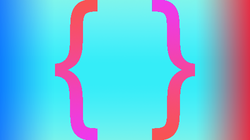

Картинка состоит из 2 частей: Фон в формате jpeg c весом
15.8 kb и вырезанные скобки в формате png c весом 34.1 kb.
Общий вес - 49.9 kb

Картинка состоит из 3 частей: Скобки в формате png c весом
52,5 kb. и верх с низом в jpeg c весом 9,55 kb.
Общий вес - 62,1 kb.

